お知らせ
ソニー合気会合宿のご報告＆参加者コメント(15/05/19更新)
04/17～04/19、ソニー合気会合宿が行われました。参加いただいた方からのコメントを掲載します。
---
かすみさんのキレのある転換を見ながら、たくさんの学びをいただきました。
自分の動きも磨いていきたいです。
(阪井)
---
久しぶりの合宿で、正にリアルタイムの緊張感に浸れたことに感謝とともに満足！
(足立)
---
審査の緊張感に浸れ、又合同合宿に満足し感謝します。
(石井)
---
心の波が表に現れず、おちついた演技に感心しました（カスミさんへ）
(田村)
---
素晴らしい審査を拝見しました。心が洗われたような気がします。
(内藤)
---
来る途中忘れ物に気づき厚木で東名をUターン。審査に間に合ったのはキセキでした。
(鈴木)
---
まだまだ本調子には程遠く、休み休みの稽古でしたが、楽しい合同合宿でした。
審査も素晴らしいものを見せて頂きました。
(吉川)
---
四段審査を拝見できたことは良き経験でした。
普段あまりできない武器技も多くでき充実した合宿をさせていただきました。
(大井)
---
二段の夢に向かって、心をあらたに始めようと思いました。
(金)
---
四段の審査を拝見出来て幸せでした。合宿を楽しく過ごせたことに感謝。
(白)
---
15年ぶりに参加できたことに感謝です。
(タムラ)
---
審査中は受けの方が緊張してしまいましたが、合宿ならではの充実したお稽古でよかったです。
(サノ)
---
ソニーさんの合宿は、途中からですが初参加となりました。
稽古では、武器取りの技を教えて頂き感謝です。
(小宮)
---
初の合同稽古でしたが、多人数で楽しく盛況のうちに終える事ができました。
(おっきー)
---
いつにも増して楽しい合宿でした。
太刀取りの受けもやらせていただき、レベルアップしたと感じます。
(河西)
---
取りまとめ的には、合同としても変わらない様です。お疲れ様でした。
(村本)
---
先生やたくさんの先輩方のご指導のおかげで、おちついて審査を受けることができました。
ありがとうございました。
(中潟)
---
とてもよい状況で審査を受けさせていただき、鈴木先生をはじめ、皆様に感謝・御礼申し上げます。
(斎藤)
ご参加いただいた皆様、ありがとうございました。次回もまた、よろしくお願いいたします！
03/07ソニー合同稽古＆懇親会の写真(15/03/28更新)
03/07のソニー合同稽古の際に撮った写真と、懇親会での写真です。
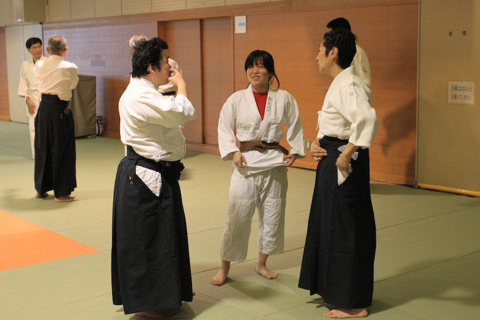 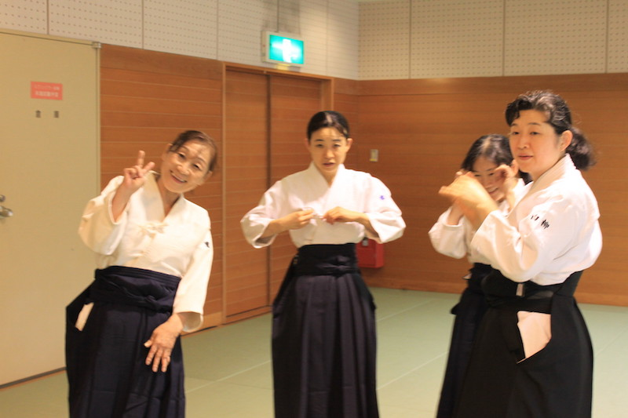 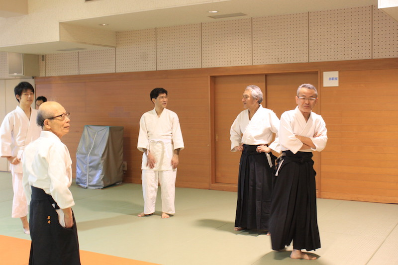 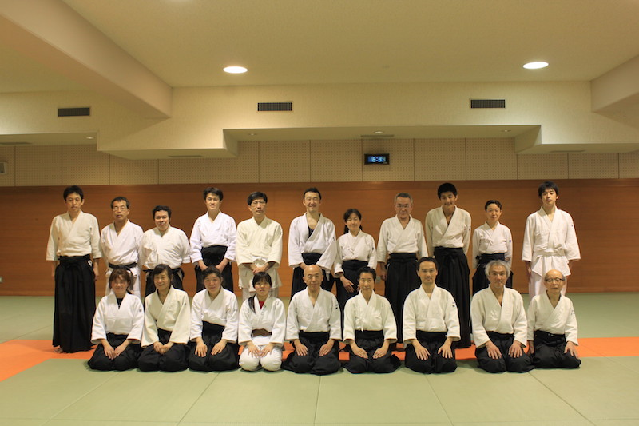 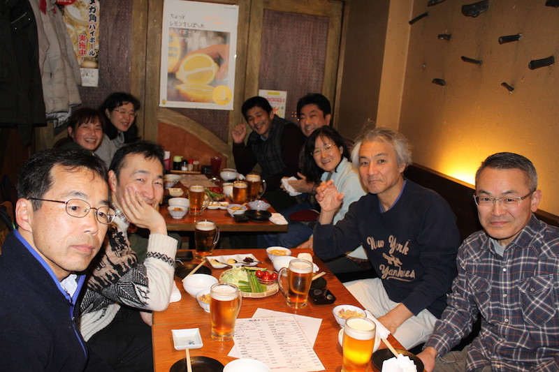{kind=link}
{kind=link}
{kind=link}
{kind=link}
{kind=link}
12/15稽古後＆忘年会の写真(14/12/22更新)
12/15の稽古後に撮った集合写真と、忘年会会場での写真です。
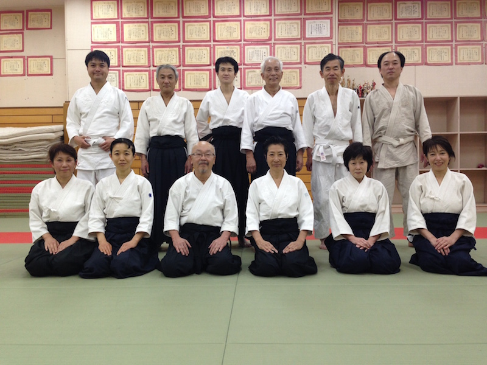 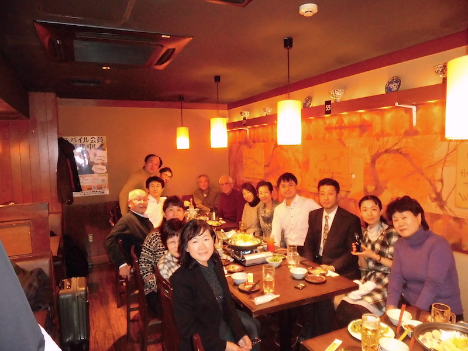{kind=link}
{kind=link}
東京都合気道演武大会のご報告＆参加者コメント(14/10/31更新)
10/26、東京都合気道演武大会が開催されました。
演武大会終了後は、鈴木道場で稽古している山中さんが店主のお好み焼き屋
「小奈や」
にて直会（なおらい）を行いました。
テレビにも出た人気のお店です。「噂の！東京マガジン」で紹介されたそうです。
とっても美味しいお好み焼きを楽しみました。
参加いただいた方からのコメントを掲載します。
---
東京都の大会は1000人を超える参加者で合気道関係の多くの知人に会えるのがとても楽しいです。
(ヒデ)
---
息切れせずにうけがとれてよかったです。
(K)
---
東京都の演武大会は近くの距離から見られるので、様々な道場の違いがよく分かって面白いです。
(カサイ)
---
日本武道館での演武大会と差が大きいなあと感じました。
(ハチ)
---
一人で取りの演武をやらせて頂き、良い思い出になりました。待っている間は緊張しました。
(渡辺)
---
楽しくいろいろな道場の演舞を見て、感謝します。
(I)
---
高校生の演武、白帯なのにうまかった。道場によって特色があるのを感じました。
鈴木道場は技がきれいと感じました。
(T.K)
---
演武大会に初めて参加させて頂きました。他の団体の演武を視るのは参考になり、
刺激になります。渡辺さんの演武には感動しました。
最後は、山中さんの店（お好み焼き）で懇親会、充実した一日となりました。
(T.K)
---
山芋焼きがとても美味しかったです。女子会でまた行こうと思います。
(K.O)
---
東京都演武大会、参加しました。皆さん日頃の成果を存分に発揮してました。
また稽古へ新たな気持で取り組んでいく気力をもらいました。
---
渡辺さんの演武はうつくしかったです。
(MJ)
---
東京都演武大会で学んだことを日々の稽古に活かしたいと思います。
渡辺さんの演武はさすがでした。
(T.N.)
---
演武者との距離感がとても近い感じで緊張感とともにとても見学していて面白かったです。
平常心でいつものようになめらかにやわらかい動きで演武された大先輩に感動しました！
(あき)
ご参加いただいた皆様、ありがとうございました。次回もまた、よろしくお願いいたします！
ソニー合気会合宿のご報告＆参加者コメント(14/10/02更新)
09/19～09/21、ソニー合気会合宿が行われました。参加いただいた方からのコメントを掲載します。
---
いつも、稽古に来やすい雰囲気があり続けています。
今回の合宿では、いつもの稽古では得られなかった説明もあり有意義でした。
夜の飲み会も、笑いがいっぱいで楽しさもある合宿です。
(TO)
---
合宿審査が今回はとてもじっくり、しっかりやって頂きました。
受けも審査対象、という事を実感しながら受けを取らせて頂きました。
(おっきー)
---
全てにおいてリフレッシュさせて頂きました。改めていいものですョ合宿。
(あ)
---
先生にも有段者の方々にも密な内容の稽古をして頂けるのでとても勉強になりました。
バーベキューでの会話が面白すぎて忘れられません。
(山本)
---
4級審査でした。合宿参加の皆さまに相手をしていただき、
自分の動きが良くなっていくのを感じることが出来ました。
ありがとうございました。
(長澤)
---
「少し身体が反っているから、ほんのちょっとだけ前に入れて」というご指導で
全く違うアタリを感じられました。合気道だけでなく、最近気になっていたことにも
通じる気づきになりました。
(阪井)
---
日頃と違う環境で稽古をすることで技が新鮮に感じられ、
少しだけ新しいコトが1つ得た気がした。
コレをもってふだんの生活にもどり稽古を続ける。
そのくりかえしが私の日常になれば幸せである。
(金)
---
美味しいご飯、規則正しい生活、そして充実した稽古。満足です。
集中して稽古することで、少し自分の体に対する理解が深まったように思います。
(K.O)
---
合宿に来ると、普段よりも多くの様々な方と稽古できるので、
自分の技のクセや改善点が見えやすくなって勉強になります。
あと、飲み会での会話が純粋に楽しいです。
(カサイ)
ご参加いただいた皆様、ありがとうございました。次回もまた、よろしくお願いいたします！
鈴木道場合宿のご報告＆参加者コメント(14/09/18更新)
07/25～07/27、鈴木道場合宿が行われました。参加いただいた方からのコメントを掲載します。
---
今回の合宿で審査を受けました。大勢の方が参加してくださり、アドバイスを頂けたのが嬉しかったです。
練習後にすぐ温泉に入れるのが、この宿の良い所です！
(ネコ)
---
幹事として無事終了し、よかったです。皆様のおかげです〜。狩野さんの審査、事前にがんばっていらしたし、
当日もとてもよかったです。感動しました。夏の海も楽しめてラッキーでした。
(サノ)
---
海の近くの民宿で合宿です。宿の食事が美味しく毎年夏合宿を楽しみにしています。
日頃の疲れも、皆と一緒におけいこをすると元気になれます。
(白柳)
---
稽古で思い切り汗を流し、波打ち際で遊んで氷を食べるこの合宿こそが私の夏！
これで仕事もがんばれます
(アキ)
---
８年振りに参加させていただきました。行き届いた幹事の佐野さんのおかげでとても楽しかったです。
相変わらずのたたみの堅さが明日からの仕事に影響しそうです。
(平賀)
---
今年の合宿は、天気も良く気持よく稽古が出来ました。
海もおだやかで水あそびも楽しめて良い思い出になりました。
(たけ)
---
今年は、土曜日の夜からの参加でしたが楽しい２日間となりました。
審査では自分のほうが緊張してしまい申し訳ありませんでした。
その後の相手の気持を感じる稽古？が面白かったです。
微妙な相手の気持を感じられるようになれたらと思いました。
(小宮)
---
今回は、合気だけではなく、天気にも恵まれて海水浴もたんのうできました。
最後のゲリラごう雨にはびっくりしましたが。
(木村)
---
今回は絶好の合宿日和で、けいこも海も楽しめました。
審査は初段１名でしたが、じっくりと審査をしてもらえたので良かったと思います。
(おき)
---
毎年恒例の夏合宿参加しました。様々な人と合気道の鍛錬が出来るし、
阿字ヶ浦の海水泳、海の近くも道楽も最高です。
(Tajima)
---
普段の稽古ではできないような、じっくりと感覚を鍛える稽古が出来ました。
それと今回はピンポイントで天気にも恵まれ、海水浴を存分に楽しむ間は
素晴らしい快晴だったので運が良かったです。
(カサイ)
ご参加いただいた皆様、ありがとうございました。次回もまた、よろしくお願いいたします！
ソニー合気会合宿のご報告＆参加者コメント(13/09/25更新)
09/06～09/08、ソニー合気会の合宿が行われました。参加いただいた方からのコメントを掲載します。
---
まさか合宿でバーベキューができるとは思っていませんでした。
不安だった天気の方も良く、大変楽しかったです。
また、普段やらない武器取りの稽古が新鮮で身になりました。
長時間の稽古ができる・普段やらない稽古ができるのが合宿の醍醐味かなと思います。
先生を初め皆さん、ありがとうございました。
K.O
---
広々とした道場で，普段とは少し違った様々な練習を経験できました．
初の昇級審査も，先生や先輩方の暖かいご指導やご支援により落ち着いて
受けることができました。
バーベキューは久しぶりでとても楽しかったです。
Y.Y
---
4年半ぶりの合宿でやや緊張しましたが、とても楽しく充実した時間を過ごすことができました。
稽古では、基礎のところで今更ながら新たに気づくことがたくさんあり、
非常に勉強になりました。
また、審査では久しぶりにあのピンとした空気を味わって、気持ちを新たにしました。
この気持ちを維持し、今後の稽古にも参加していければと思います。
K.S
ご参加いただいた皆様、ありがとうございました。次回もまた、よろしくお願いいたします！
鈴木道場合宿のご報告＆参加者コメント(13/08/23更新)
07/26～07/28、鈴木道場の合宿が行われました。参加いただいた皆様からのコメントを掲載します。
合宿では道場直結の温泉が嬉しかったです。稽古疲れが一気に吹き飛びました。
昇級審査では、先生のほかにも、皆さんが丁寧に指導、助言してくださったことに心から感謝しています。
Y.K
---
今回も充実した稽古でした。合宿だと普段よりもじっくり深堀りした
稽古ができるので、自分の技や動きを見つめなおすいい機会になりました。
合宿でしかできないことってありますね。
あと、今年は食事が特に美味しかった（笑）来年も期待してます。
T.K
---
お二人の充実した審査の後は、
恒例の「夏」合宿ですから、海に行くのもイベントのひとつです。
土曜日は雷雨でしたが、2日目の午後は
天気がよくなり、海を楽しむことができたので、
幹事としてはよかったなと・・・・・。
R.S
---
毎年恒例の鈴木道場の夏合宿に参加しました。
海の香りが漂う阿字ヶ浦で、日頃の稽古とは異なる環境での稽古は、
新たな身体感覚を呼び覚ます貴重な機会でした。
また、海の真っ正面にある温泉でゆっくり身体を癒す事ができ、
心身両面のリフレッシュができました。
Y.T
---
2013年7月に鈴木道場の合宿に参加しました。
阿字ヶ浦までのレトロな電車と田園風景。
さわやかな風が吹く民宿と近くにある海。
お稽古でいい汗をかいた後の海へのお散歩は最高です。
心と身体のリフレッシュが出来て、とても楽しい時間でした。
ありがとう！
M.S
---
親睦会では明かりを消して先生による「気」の実演。
審査の後には正しく正座をし心を込めた礼、また両手を添えてお茶を飲む時には強い力を生むことを実験検証。
そして何より相手を思いやる稽古の大切さを教わりました。
新鮮な体験、大切な勉強をさせて頂き感謝の気持ちでいっぱいです。
T.K
---
毎年7月に行われる夏合宿に参加しました。
場所は阿字ヶ浦。茨城県の海のそばです。
普段の稽古を凝縮した稽古を、土曜日に2回、日曜日に1回行い、
とても充実した時間を過ごさせていただきました。
稽古のあとは、宴会と花火。それに海にも行きます。
砂浜に座って冷えたビールを呑む。これもこの合宿の楽しみのひとつです。
今年も、楽しい時間を過ごすことができました。
ありがとうございました。
Y.N
---
体育会とは無縁のまま成長し、
大人になってから始めた合気道で、
よもや合宿があるとは知らなかった（参加自由）。
稽古が3回とれるので、いつもより細かい点をご指導いただいたり、
審査もあって緊張感が漂いますが、
フリータイムにはみんなで海へ行ったりとメリハリがあって楽しかったです。
もう7回も参加したとは、自分が一番驚いています。
K
ご参加いただいた皆様、ありがとうございました。来年もまた、よろしくお願いいたします！
東京都合気道演武大会に参加しました(12/10/28更新)
10/28、東京都合気道演武大会に参加いたしました。
鈴木道場からは17名が演武に参加、また、道場メンバーの知人の方も1名見学に来ていただきました。
実は、今年からは去年までとは違い、師範演武の替わりに代表者演武が行われることになりました。
東京都合気道演武大会は、地域に根ざした、いわばローカルな「草の根」活動という位置づけになっております。
師範のもとで稽古に励む方々にも個別に演武を披露する機会を与えようという、ローカルな演武大会ならではの取り組みと思います。
今回、鈴木道場からは佐野さん（受け：斎藤さん）が演武を行い、滑らかでかつ芯のある動きを披露されました。
他との違いで一番印象に残ったのは「静けさ」。滑らかな技と畳を叩かず柔らかく取る受け身が合わさり、音のしない演武となるのです。
大会終了後は、懇親会で楽しく大いに盛り上がりました。営業開始時間前から店に入れていただいた焼鳥屋さん、ありがとうございました。
来年もまた、よろしくお願いいたします！
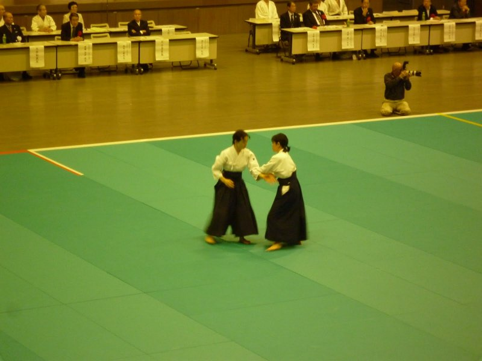 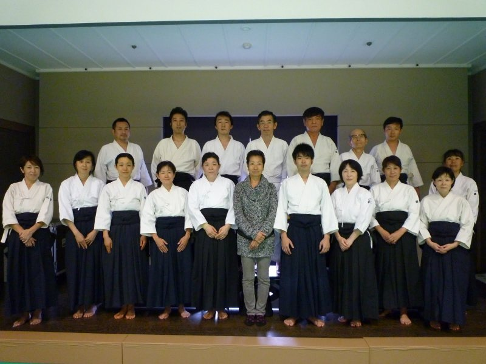 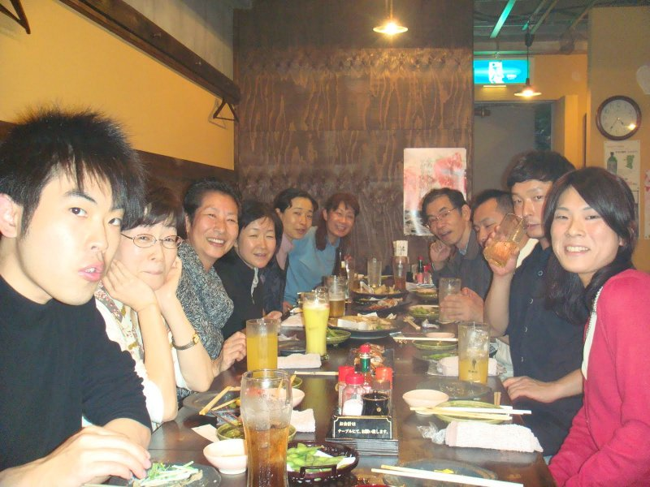{kind=link}
{kind=link}
{kind=link}
全日本合気道演武大会のお知らせ(12/04/01更新)
今年度も鈴木道場は参加いたします。
各団体の師範や色々な道場の演武を見れるよいチャンスです。奮って御参加ください。
詳しい日時等は追ってご連絡いたします。
【場所】 「日本武道館」 東京都千代田区北の丸公園 2-3
お花見会のお知らせ(12/04/01更新)
日程 ：4月7日 12時半ごろから（土曜日クラスの稽古終了後）
場所 ：東板橋体育館すぐそばの公園（http://www.city.itabashi.tokyo.jp /c_kurashi/002/002111.html）
参加費 ：実費
備考 ：
・食べ物、飲み物は、近くのコンビニや、惣菜屋さんで現地調達予定です。
・敷物を持参いただけると幸いです。
・参加費は、実費です。
・土曜日稽古に参加していただければ、
宴会の実施場所など迷うことが無く、スムーズにお花見会に参加できます。
東京都合気道連盟主催演武大会のお知らせ(11/9/24更新)
日程 ：10月23日 11時受付開始、12時開会、15時30分閉会予定
場所 ：東京都武道館（綾瀬 http://www.tef.or.jp/tb/access/access.html）
参加費用 ：1000円
集合 ：JR綾瀬駅東口 10:45 (費用をその場で集めます)
厚木合宿のご案内(11/9/24更新)
【日程】 2011年9月30日（金）～10月2日（日）
【場所】 山中湖 至誠荘 http://homepage2.nifty.com/shiseiso/
【費用】 ￥28,000位
ふるってご参加ください。
鈴木道場合宿のお知らせ(11/6/20更新)
日時：７月２２日（金・夜）から７月２４日（日）
場所：茨城県ひたちなか市阿字ヶ浦663 民宿「ふるさと」
ふるってご参加ください。
全日本演武大会のお知らせ(11/5/1)
鈴木道場、ソニー合気会は今年も例年通り、元気に参加予定です。
詳しい日時等は合気会HPを参照ください。
新宿スポーツセンター4月4日中止のお知らせ(11/4/3)
4月4日に予定しておりました新宿スポーツセンターのお稽古ですが、新宿スポーツセンター使用不可のため中止になります。
新宿スポーツセンター3月30日中止のお知らせ(11/3/28)
3月30日に予定しておりました新宿スポーツセンターですが、管理会社の変更による休刊のため、中止になります。
今後しばらくのお稽古について(11/3/21)
鈴木師範より、以下のご連絡をいただきましたのでお知らせいたします。
会員の皆様におかれましては ご親族 ご友人 お知り合いの方で被害に遭われた方がいらっしゃいませんでしたでしょうか
心よりお見舞い申し上げますと共に一刻も早い復旧をお祈りするばかりです
昨今の状況を踏まえ当分道場使用出来ない所 稽古を続けられる所の連絡をいたします
当分の間未定
- ソニー本社 港南中学
- ソニー厚木
- 文京区立第一中学校
- たきがしら(４月３０日の特別稽古含む)
現在お稽古出来るお稽古日
東板橋体育館
３月２６日、４月２、９、２３
１０時から１１時半 指導料他道場使用料五百円がお稽古後必要です
新宿スポーツセンター
４月４、１１、１８ （月）、２７（水）
１０時から１１時半一階券売機にて四百円の道場使用料の券を買い三階道場にてお稽古です
貸し切りではありませんので他の方と同じ道場になります
ご迷惑をおかけしてすみません 連絡あり次第各道場の再開となります よろしくお願いします。
今週19日の東板橋稽古について(11/03/17)
行う予定です。ですが、電車や停電の状況次第で変わるかもしれません。
ソニー本社 18日お稽古および春合宿中止のお知らせ(11/03/17)
2/5のソニー本社の今週のお稽古および春合宿は今回の地震の影響により中止となりました。
ソニー25周年演武中止のお知らせ(11/03/17)
メールでも配信していますが、今回の地震の影響により25周年演武は中止となりました。
ソニー合同稽古中止のお知らせ(10/1/31更新)
2/5のソニー本社・厚木の合同稽古は鈴木先生がインフルエンザ療養中のため、中止となりました。
一刻も早いご回復をお祈り申し上げます。
ソニー合同稽古のお知らせ(10/1/30更新)
以下の日時にてソニー本社・厚木の合同稽古が行われる予定です。ふるってご参加ください。
日時：２０１１年２月５日（土） １３：３０～１６：００
場所：厚木市東町スポーツセンター 武道場
鏡開き式のご報告(11/1/9更新)
1/9、鏡開き式が本部道場にて無事に執り行われました。
本年度も大勢の方が一同に会する大変にぎやかなものでした。
鈴木道場からは足立さん、名苗さんのお二方の昇段が発表されました。（足立さん(六段)、名苗さん(五段)） おめでとうございます！
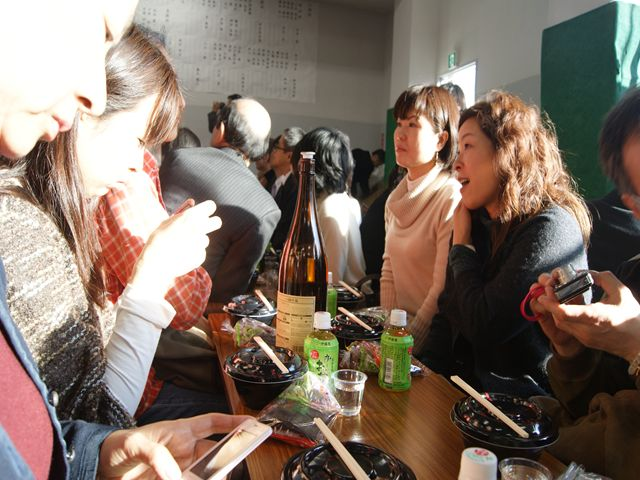 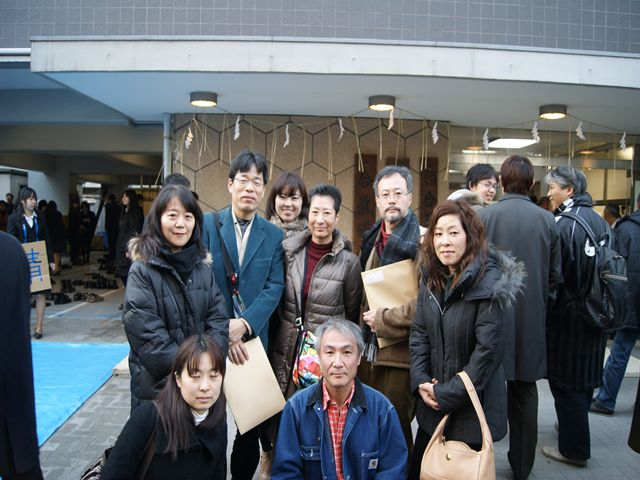{kind=link}
{kind=link}
鏡開き式のお知らせ(10/12/1更新)
年明けですが、以下の日時にて鏡開き式が執り行われる予定です。ふるってご参加ください。
日時：２０１１年１月９日（日） １４：００～１６：００
場所：合気会本部道場
鈴木順子師範特別稽古 in たきがしらのお知らせ(10/10/29更新)
たきがしら合気会発祥の地であるたきがしら教職員会館は今年末をもって
取り壊しとなりました。寂しいですがたきがしら会館での特別稽古は最後となります。
尚通常の稽古は場所を移して森中学というところで行っております（HPを参照してください）。
お時間が許せばこちらの方へのお越しいただければと思います。
日時：１１月０６日（土） ９：３０～１２：００
場所：たきがしら教職員会館
参加費用 ：1000円
稽古後には直会を予定しております。
東京都合気道連盟主催演武大会のお知らせ(10/10/5更新)
日程 ：10月24日 11時受付開始、12時開会、15時30分閉会予定
場所 ：東京都武道館（綾瀬 http://www.tef.or.jp/tb/access/access.html）
参加費用 ：1000円
演武大会を終えて(10/11/22更新)
10月24日(日)、東京都合気道連盟演武大会に出場しました！
演武者18名＋見学1名と大盛況でした。
出番が早かったので直前に合わせる事ができず、開会式後にそのまま会場待機～出場でした。
演武は片手取り自由技と、横面打ち自由技を行いました。
また、今年から鈴木先生も師範演武ということで出場されました。
後ろ両手首取りの押さえ技中心に、いつものお稽古で見せていただくような
柔らかく流れるような演武でした。
終わった後はもはや恒例となったおつまみもお酒も美味しい焼鳥屋さんでの懇親会で大盛り上がり。
今回出場された方も、また残念ながら不参加であった方も、来年もまた是非出場しましょう！
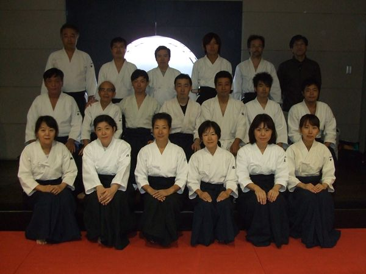 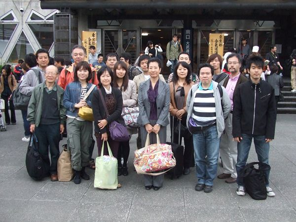１０年度ソニー本社秋合宿のお知らせ
日程 ：2010年9月10日(金) 夜発 ～ 9月12日(日)
場所 ：千葉県岩井海岸 （北原館 http://www.awa.or.jp/home/kitahara/）
※昨年の秋合宿と同じ場所です。
費用 ：3万円程度
鈴木道場合宿のお知らせ(10/7/2更新)
日時：７月３０日（金・夜）から８月１日（日）
場所：茨城県ひたちなか市阿字ヶ浦663 民宿「ふるさと」
ふるってご参加ください。
本社・厚木合同稽古
日時： 6月27日（日） 15:30～17:30 （稽古時間）
場所： 港区スポーツセンター 第一武道場（144畳貸切）
http://www.city.minato.tokyo.jp/sisetu/sports/center/index.html
-港区ポータルサイト-
http://www.city.minato.tokyo.jp/sisetu/sports/center/index.html
会費： 2,000円 現地にて集めさせていただきます。
懇親会
日時： 6月27日（日） 18:00～20:00
場所： 串一徹
住所： 東京都 港区 芝5-21-15 芝三勝ビルB1
電話： 03-3455-2644
地図： http://ggyao.usen.com/0005001237_map.html
会費： 4,000円弱
平成22年度全日本合気道演武大会のお知らせ
今年度も鈴木道場は参加いたします。
各団体の師範や色々な道場の演武を見れるよいチャンスです。奮って御参加ください。
【日時】 平成22年5月22日（土）午前11時半開場 正午開会 午後5時半閉会予定
【場所】 「日本武道館」 東京都千代田区北の丸公園 2-3
48期 厚木合宿のご案内(10/4/3更新)
【日程】 2009年4月16日（金）～4月18日（日）
【場所】 山中湖 至誠荘 http://homepage2.nifty.com/shiseiso/
【費用】 ￥28,000位
3/13の鈴木道場のお稽古に奈良の合気道正勝会から2名の方が参加されました。(10/3/16更新)
もうすっかりおなじみになりましたが、久しぶりに奈良の合気道正勝会のお二人が稽古に参加してくださいました。
昇級昇段を控えた方々も参加し、3/13の稽古はいつもにまして楽しく、かつ密度の濃いお稽古になりました♪～
参加者全員が稽古後一緒に昼食を取って、合気道談義に花が咲きました。
遠いところ大変ありがとうございました。またのご参加を心待ちにしております！
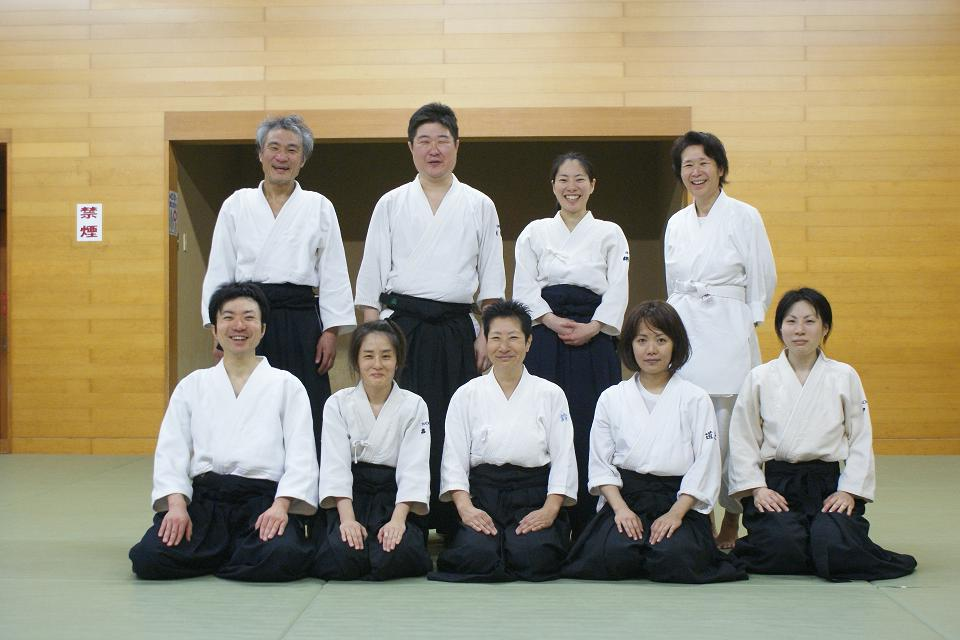１０年度ソニー本社春合宿のお知らせ(10/2/28更新)
日程 ：2010年3月26日(金) 夜発 ～ 3月28日(日)
場所 ：千葉県夷隅郡御宿町浜2164
宿泊先：いしい荘
※昨年の春季合宿と同じ場所です。設備の整った、よい宿です。
費用 ：3万円程度
鈴木順子先生の「七段位」を祝う会（記念合同祝賀会）のお知らせ(10/2/28更新)
ソニー合気会（本社/厚木）、鈴木道場、たきがしら合気会による記念合同祝賀会
日時：3月7日（日） １６：３０開宴 ～ １９：００まで（１６：００開場）
場所：Y'sエステック情報ビル４階「個室宴会場AGORA」 「大宴会場パーティハウス」に変更になりました。 03-3522-3545
新宿駅西口から徒歩１０分http://r.gnavi.co.jp/p184300/menu7.htm地図
会費：男性 ７０００円 女性６５００円 (小学生以下のお子様は無料です。)
幹事・堀田さんより「参加できる方はぎりぎりまでご連絡OKです！」とのことです。
ソニー・ヒューマンキャピタルの社内報にソニー合気会所属の城出さんの記事が掲載されました。(10/2/10更新)
にこやかな鈴木師範との2ショットが印象的な「Viva★Life!生活情報Vo.40」
鈴木順子師範の七段昇段について(10/2/10更新)
1月10日に合気会本部道場で行われた鏡開き式にて鈴木順子師範はめでたく七段に昇段されました。
鏡開き式に次いで「鈴木順子師範七段位を祝う会」もつつがなく執り行われました。
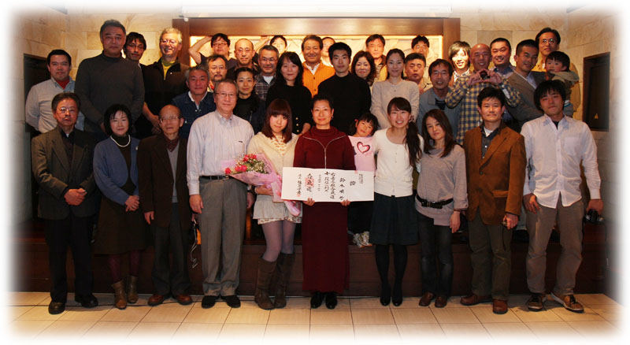ソニー本社・厚木合同稽古のお知らせ(10/1/12更新)
日時：２月１４日（日）１４：００〜１６：３０
場所：厚木東町スポーツセンター
お稽古後に１７：００より懇親会を予定しています。
17:00〜19:00
場所： 【漁師の店】海湘丸
◇地魚料理＋海鮮漁師鍋コース◇
費用： ５０００円程度（呑み放題付き）
懇親会のみの参加でもOKです。奮ってご参加ください。
平成２１年度 鈴木道場 合気道夏合宿のお知らせ(09/7/3更新)
日時：平成２１年７月２４日（金夜）から２６日（日）
場所：茨城県ひたちなか市阿字ヶ浦663 民宿「ふるさと」
TEL 029-265-8135 FAX029-265-8165
日程（予定）
７月２４日（金・夜）
上野駅→20:00発「特急スーパーひたち」→21:16勝田駅→21:47（乗換）→阿字ヶ浦駅22:14着→民宿22:30頃
７月２５日（土）
起床→朝食→稽古→昼食→稽古→温泉・海水浴等→夕食→懇親会→就寝
７月２６日（日）
起床→朝食→審査・稽古→昼食→温泉・海水浴等→民宿発→阿字ヶ浦駅15：57→（乗換）16:24→
勝田駅→16:46「特急フレッシュひたち」→上野駅18:08
参加費用
金曜日夜からの参加者 ２８，０００円（交通費込み）
土曜日からの参加者 １８，０００円（切符各自手配）
ご参加ありがとうございました(09/5/30更新)
5/30の鈴木道場のお稽古に奈良から2名の方が参加されました。遠いところからありがとうございました。
無料体験のお知らせ(09/5/17更新)
日程：5/18(月)・6/1(月)・7/6(月)・8/3(月)・9/14(月)
時間：19:00〜20:30
場所：文京区立第一中学校 地下鉄丸の内線 茗荷谷駅より徒歩１分 (MAP)
お申し込みは 03-3909-7566 鈴木まで。初心者の方、歓迎です。
46期厚木合宿のおしらせ(09/4/6更新)
日程：4/17（金)〜4/19（日）
場所：丸富荘
学(まなび)の発見ポータル manapo.com様から取材を受けました。(08/9/28更新)
会費：男性 7000円、女性 6500円